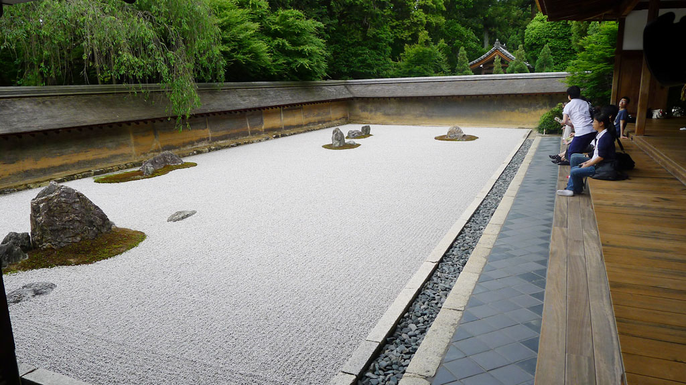

日本游记之枯山水
更新日期:
在几日的日本之行中让我最为倾倒的是日本的园林。行程中的古迹遗址，住宿的酒店花园，路过的普通人家，日式庭院让我感受到一种与中式园林不同的美，精致，简约，小巧，灵动，用心。其中最为特别的是枯山水。一般来说中式园林的组成少不了绿树红花，亭台楼榭，瀑布流泉，山水相依，路径曲折。而枯山水完全没有这些元素，碎石白沙铺地，错落有致的石头作为元素，偶尔有苔藓，草坪作为点缀，真是奇哉！
枯山水的抽象之意

枯山水是抽象的，他所展现的意境，一部分是造园者的意图，多半却是观赏者的体会。坐在龙安寺方丈庭前，静心宁神，向庭院看去，大海寥廓，岛屿散布，犹如在海边高崖之上向远处望去的景色；再看，却是云雾流动，远山偶露峥嵘，犹如在山顶远眺，气象万千；换个角度再看，碎石为江，石块为船，竟是一幅千帆竟渡的景象；或是佛陀说法，或是两军对峙，变化无尽。游人在庭前观景、观心，真是趣味无穷，玄妙无穷。
枯山水的灵动之美
枯山水是一幅永远创作不完的水墨画。一般来说园林景色的的变化都是依四时而变，依天气而变。正所谓“朝而往，暮而归，四时之景不同，而乐无穷也。”而枯山水则大为不同，创作者可以随时通过耙子来修改碎石白沙的纹理，走向，甚至是为碎石白沙造型，改变整幅画面。这种变化为枯山水赋予了一种灵动之美。
枯山水的小大之变
枯山水是以小见大的典范。园林为了实现以小见大的审美要求，一般来说都会通过繁复的布置，曲折的路径，高低，角度的变化来完成。以期能够模拟大山大水的变化，多样。枯山水则完全跳出了这样的一种思路。简单的几个石组，近乎平面的布置，大面积的留白。这样的形式改变了观察者的视线方向和视野范围，从一般的人在景中转到了人在景外。这样对大的感受也就不局限于山水，而能延展到“天地玄黄，宇宙洪荒，日月盈昃，辰宿列张”的境界。
枯山水的物我之道
枯山水是一种引人思考的园林形式。一般园林我们会感叹于设计者的精巧构思，景色的迷人，亟不可待的走进去，想去欣赏那美景。而对于枯山水则不然，我们不用移动，甚至不再用多看几眼，只需静坐在庭前，风景自然会映现，变换。而自身也在景色中融入。空间上虽然有距离，精神与思想却在其中。物我两忘！